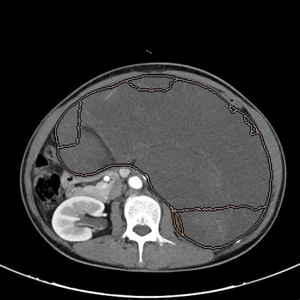
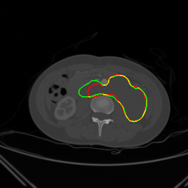
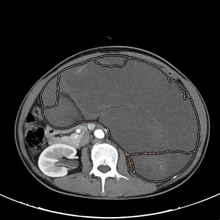
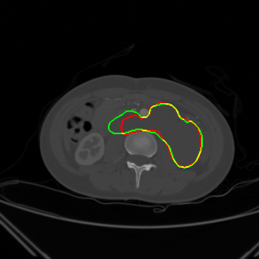
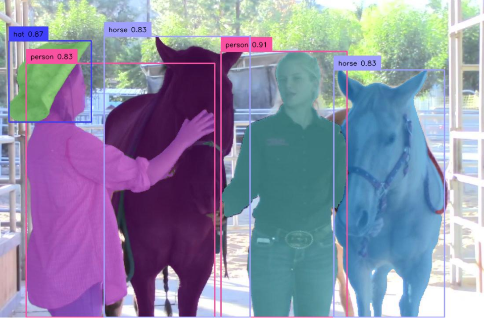
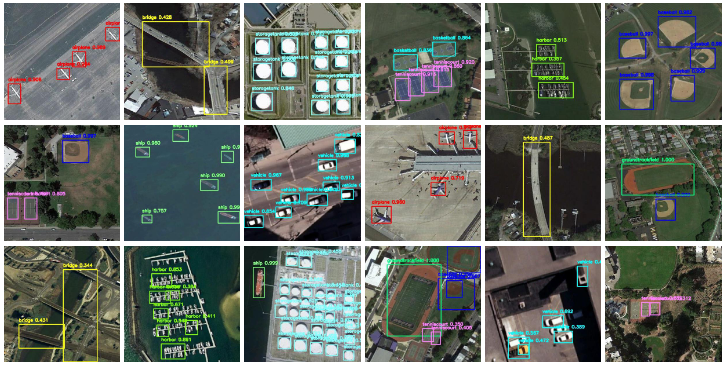

关于我
🔬 科研与项目经历
原发性腹膜后肿瘤诊断与分割（多中心研究） (2019.01–2020.12)
 



- 搭建 3D 医学图像深度学习框架，实现 肿瘤区域精准分割与分类
- 引入医学图像预训练大模型、视频目标检测方法改进分割效果
- 完成数据预处理（DICOM → NIfTI）、Linux/conda 实验环境搭建
- 成果：论文发表于 Eclinicalmedicine
双时医学图像变化的时序分割方法 (2024.04–2024.07)

- 借鉴视频分割方法 DEVA的时序传播机制，用于双时 CT 图像变化检测
- 捕捉时间维度细微差异，提高分割的一致性与鲁棒性
- 成果显著提升 Dice 指标，申请发明已完成
Context and Orientation Correction (EAAI, 2023)

- 针对弱监督遥感目标检测中的 上下文模糊与方向不确定性 问题，提出 Context and Orientation Correction (COC) 框架
- 创新点：
- 上下文校正模块：利用风格归一化，缓解实例间上下文差异，提升异常目标识别能力
- 方向校正模块：基于对比学习，缩小不同方向实例的特征距离，保证目标表征一致性
- 类别感知聚合损失：提升同类目标特征相似度，解决对比学习中的类别冲突问题
- 成果：
- DIOR 数据集 mAP = 27.6%
- NWPU VHR-10.v2 数据集 mAP = 59.8%
- 论文发表于 Engineering Applications of Artificial Intelligence (EAAI, 2023)
多模态肺炎分类 (2024.06–至今)
- 设计 CT + 临床数据 的融合框架，引入跨模态注意力机制
- 提升肺炎分类准确率，性能优于单模态模型
- 成果：论文准备投稿 IEEE TMI
📄 发表论文
- Eclinicalmedicine — End-to-End Deep Learning for Retroperitoneal Tumor Segmentation (2024)
- EAAI — Contextual and Orientation Correction Modules Enhance Weakly-Supervised Aerial Object Detection (2023)
- IEEE TMI（在投） — Multimodal Learning for Pneumonia Classification (2025)
💻 技术技能
- 深度学习框架：PyTorch, TensorFlow, mmAction2, nnUNet, DEVA
- 医学图像处理：LVM-Med, MONAI, DICOM/NIfTI, SimpleITK
- 多模态学习：图像 + 表格/文本融合，视频目标检测
- 工程与工具：Linux, Docker, Git, Hadoop, Spark
- 编程语言：Python, C++, C#, SQL
- 可视化：ECharts, Matplotlib, Seaborn
🏆 荣誉与竞赛
- ICPC 亚洲区域赛铜奖（C++）
- 全国大学生数学建模竞赛 一等奖
- 全国大学生英语竞赛 一等奖
- 美国大学生数学建模 H 奖
- 中国高校计算机大赛-天梯赛省三